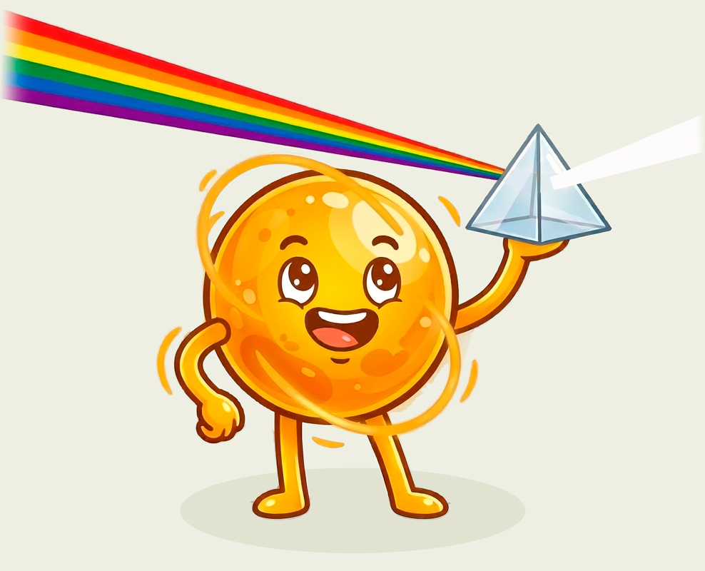

⚡️ El rayo luminoso
|
 |
La óptica es la rama de la física que estudia la luz, sus propiedades y cómo interactúa con la materia. Dentro de esta disciplina existen diferentes enfoques, y en esta lección nos enfocaremos en uno de ellos: la óptica geométrica. La óptica geométrica, también llamada óptica de rayos, estudia la propagación de la luz usando una representación sencilla y visual. |
En el siguiente video podrás descubrir de qué se trata:
💡 ¡Eureka!
Como viste en el video, en la óptica geométrica no hace falta usar fórmulas complejas. Partimos de una idea fundamental:
| En medios uniformes (es decir, que tienen las mismas propiedades en todos sus puntos), como el aire, la luz siempre viaja o se propaga en línea recta. A esta representación la llamamos rayo luminoso o rayo de luz. |
👀 Quédate con esta idea, porque será la base para el acertijo que viene.